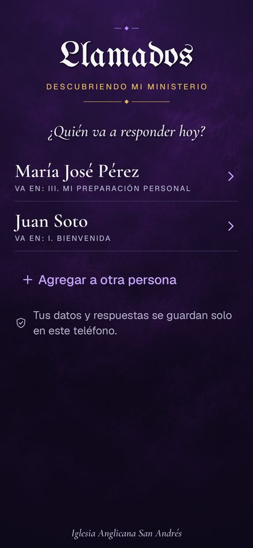
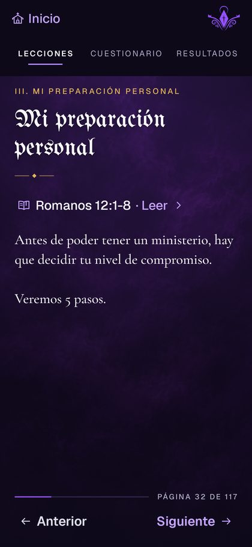
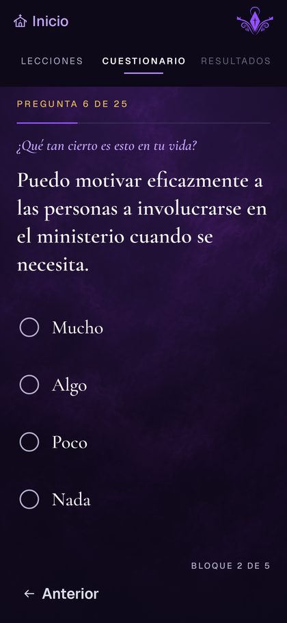
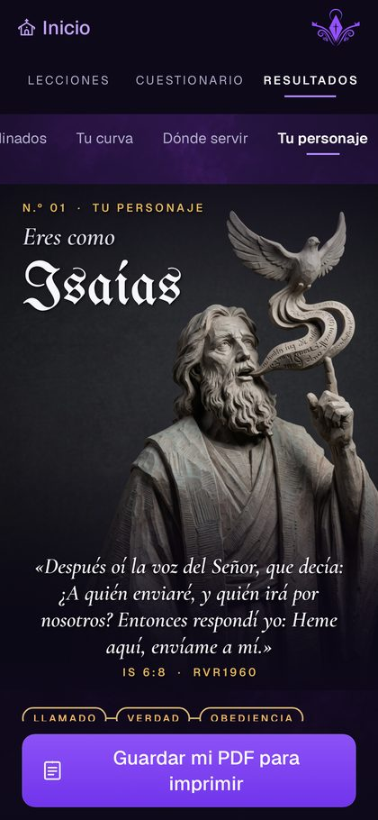

Llamados
Descubre los dones que Dios puso en ti y dónde puedes servir.
¿Estás en el computador? Escanea con la cámara de tu celular.




Cómo instalarla
-
Toca «Descargar para Android»
Hazlo desde tu celular. Si el navegador pregunta si quieres descargar el archivo, toca Descargar. Espera a que termine (aparece arriba, en las notificaciones).
-
Abre el archivo descargado
Toca la notificación «Descarga completa», o busca dones-demo.apk en la app Archivos → Descargas.
-
Permite la instalación
La primera vez, Android te avisa que no puede instalar apps desde ese lugar. Es normal: la app no viene de la Play Store.
Por tu seguridad, no puedes instalar apps desconocidas desde esta fuente.CancelarConfiguraciónToca Configuración, activa Permitir desde esta fuente y vuelve atrás con la flecha.
Permitir desde esta fuente -
Toca «Instalar»
Si aparece un aviso de Play Protect diciendo que la app es desconocida, toca Más detalles y luego Instalar de todas formas. Sale porque la app todavía no está en la Play Store.
App no segura bloqueada Play Protect no reconoce al desarrollador de esta app…AceptarMás detalles -
¡Listo! Abre Llamados
La encontrarás junto a tus otras apps. Elige Soy una persona nueva, escribe tu nombre y comienza la lección.
Cómo actualizarla
Cuando te avisen que hay una versión nueva, vuelve a esta página y repite los pasos 1, 2 y 4. Se instala encima de la anterior y no se borran tus respuestas ni tus perfiles.
Si prefieres que el celular te avise solo, instala la app gratuita Obtainium y agrega este enlace: github.com/Protocol31/Dones.
Preguntas frecuentes
¿Es segura?
Sí. La hizo la iglesia para el curso. Android muestra avisos porque no viene de la Play Store, no porque tenga algo malo.
¿Dónde quedan mis datos?
Solo en tu celular. Tu nombre, tus respuestas y tus resultados no se envían a internet. Si desinstalas la app, se borran.
¿Funciona en iPhone?
Por ahora no, solo en celulares Android.
Me dice «App no instalada»
Revisa que tengas espacio libre (unos 150 MB) y que la descarga haya terminado completa. Si ya tenías una versión muy antigua, desinstálala primero (ojo: eso borra tus respuestas guardadas).
No encuentro el archivo descargado
Abre la app Archivos (o Mis archivos) y entra a Descargas. También puedes abrir Chrome → menú ⋮ → Descargas.
¿Pueden usarla varias personas en el mismo celular?
Sí. Al abrirla, cada persona elige su nombre o toca Agregar a otra persona.